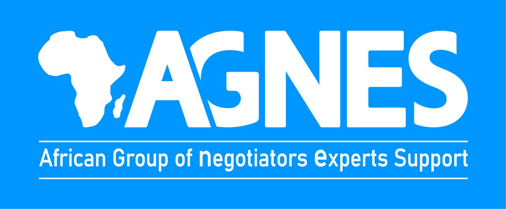
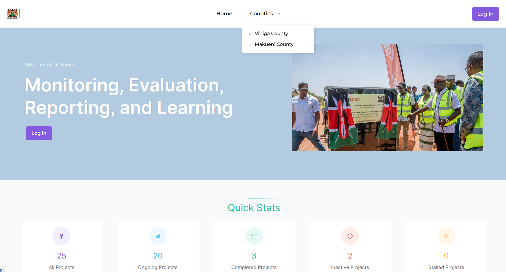
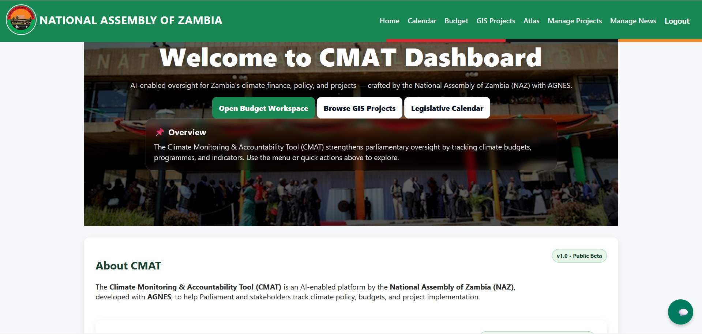
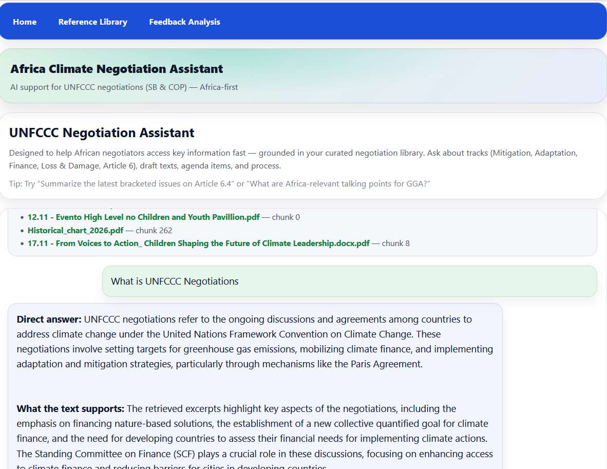

Full-Stack Software Engineer | AI & Automation | Climate Tech
Eric John Nimba builds practical digital systems for climate research, policy, and decision-making.
A
Full-Stack Software Engineer with experience building data-driven platforms, AI-powered tools, and digital systems for climate research and policy. Currently working with AGNES to support climate monitoring, reporting, and decision-making across Africa.
About
Full-Stack Software Engineer with experience building data-driven platforms, AI-powered tools, and digital systems for climate research and policy. I currently work with AGNES (African Group of Negotiators Experts Support), developing solutions that support climate monitoring, reporting, and decision-making across Africa.
Professional Summary
I design scalable web applications, integrate APIs, and apply AI tools to solve real-world problems. My work is strongest when it connects engineering quality with practical delivery for policy, research, and program teams.
I have a strong interest in climate tech, automation, and building systems that translate complex data into clear, useful insights for decision-makers.
Professional Focus
- Location: Nairobi, Kenya
- Core strengths: Full-stack systems, AI-assisted tools, automation, and stakeholder-ready UX
- Sectors: Climate policy, digital systems, analytics, and operational platforms
- Working style: Practical delivery, product-minded engineering, and clear communication
Experience

- Develop digital platforms supporting climate research, policy tracking, and data management.
- Build dashboards and systems for monitoring climate indicators and projects.
- Integrate AI tools to enhance access to climate and policy information.
- Provide ICT support and maintain internal systems to improve collaboration.
- Tech: MERN Stack, PHP, MySQL, JavaScript
- Built responsive user interfaces using React.js and TypeScript.
- Translated Figma designs into production-ready web components.
- Improved performance and accessibility across devices.
- Collaborated in Agile teams using GitHub and Slack.
- Supported development of user interfaces for order and delivery systems.
- Assisted in improving usability of mobile and web applications.
- Worked with internal tools to enhance customer experience workflows.
- Collaborated with teams to identify and resolve system inefficiencies.
Projects
Selected work focused on climate technology, decision support, analytics, and practical digital systems for research, reporting, and public-sector delivery.

Monitoring, Evaluation, Reporting and Learning system for climate program management.

Climate Monitoring & Analytics tools supporting climate action, emissions tracking, and reporting across multiple countries.

AI support tool for UNFCCC negotiations built on curated Africa-first climate negotiation references.
Skills
My toolkit spans full-stack development, AI-assisted systems, API integrations, dashboards, and deployment workflows used to deliver practical, stakeholder-ready digital products.
Programming & Development
Frontend
Backend & APIs
Databases
AI & Automation
Tools & Platforms
Cloud & Deployment
Data & Systems
Education
Certificate in Computer Software Engineering
Duration: 2023 - 2024
- Intensive training in full-stack development and scalable systems
- Backend and frontend engineering workflows
- Collaborative software delivery and practical product development
Bachelor's degree in Computer Science
Duration: 2018 - 2022
- Programming, data structures, databases, and web development
- System design, networking, and software development principles
- Foundations for building scalable and maintainable software systems
Certifications
- AI Career Essentials - ALX Africa
- Frontend Web Development - HNG
- Customer Service - Saylor Academy
Interests
- Climate Technology
- AI for Social Good
- Research
- Rugby
- Photography
Contact
If you are looking for someone to build or improve a serious digital product, climate platform, AI workflow, or internal operations tool, I would be glad to connect.
GitHub
Location
Nairobi, Kenya